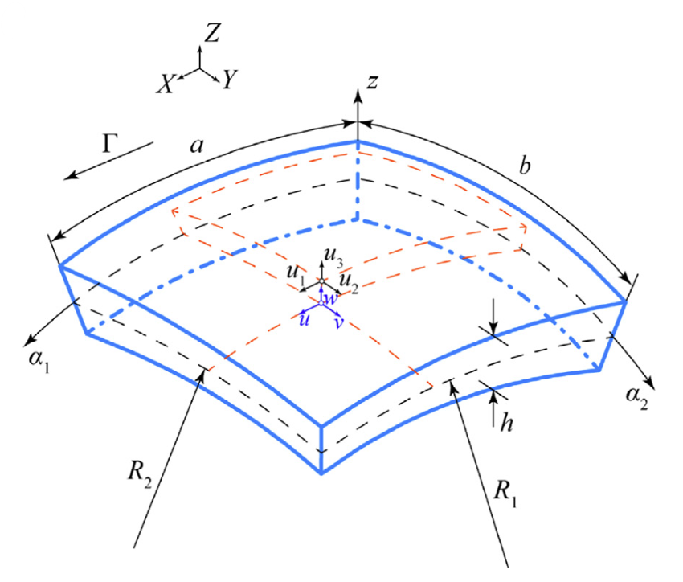

A general higher-order model for vibration analysis of axially moving doubly-curved panels/shells
Thin-Walled Structures, 164, pp.107813, 2021. Journal Article

Abstract
In this research a general model to study the vibration behavior of axially moving two-dimensional continuums in the presence of curvature along the moving axis is developed. To this end, an axially moving doubly-curved panel of variable radius of curvature is considered. The integral boundary value problem is obtained based on a higher-order shear deformation with first-order thickness stretching theory. Due to its high accuracy and computational performance, spectral Chebyshev approach is used to numerically solve the boundary value problem. Considering the geometry capabilities of the developed model, dynamics of various axially moving structures such as flat, singly- and doubly-curved plates/shells in different engineering applications with different boundary conditions can be investigated. The numerical results confirmed that the calculated natural frequencies for axially moving flat plates and circular cylindrical shells are in excellent agreement to those found in the literature and obtained via finite element approach. Furthermore, the effects of the axial velocity, thickness stretching, curvature ratio, and boundary conditions on the natural frequencies and stability behavior of the doubly-curved panels are investigated.